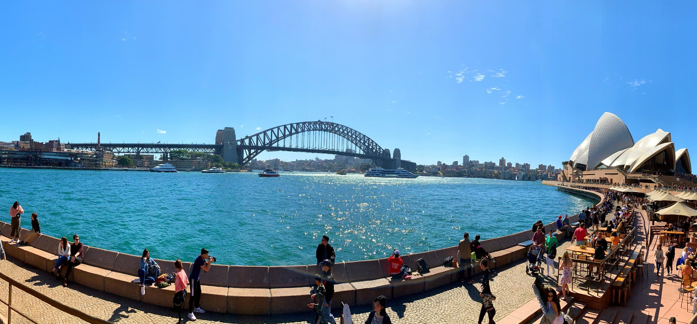
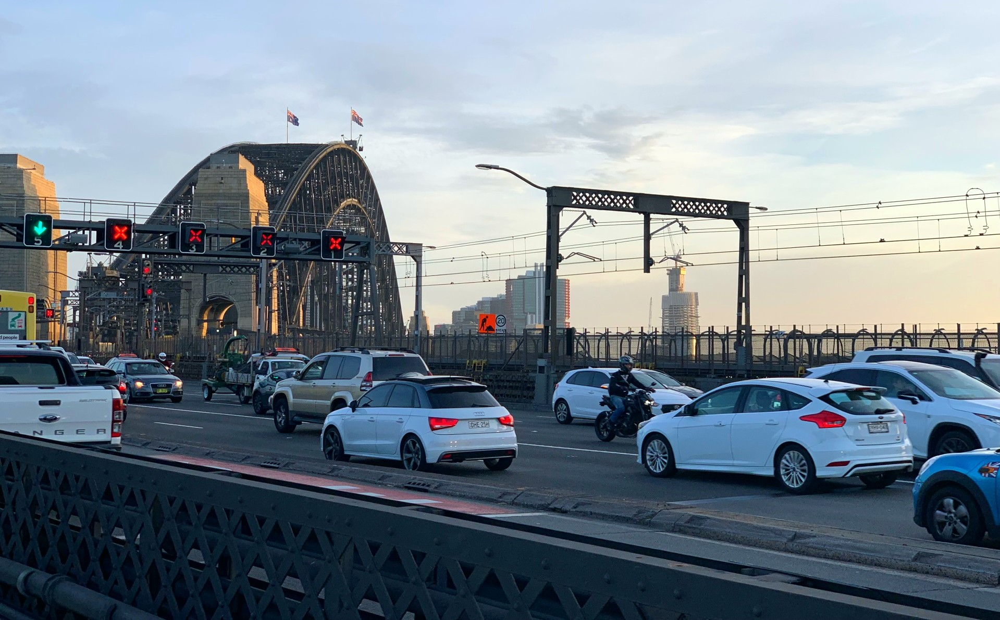
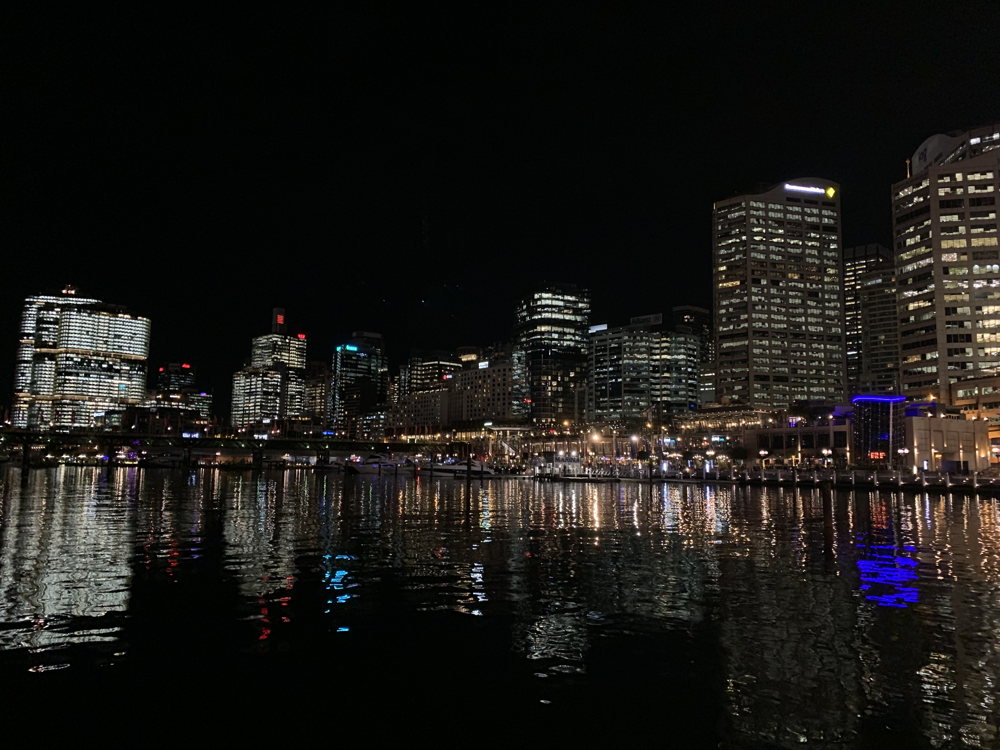
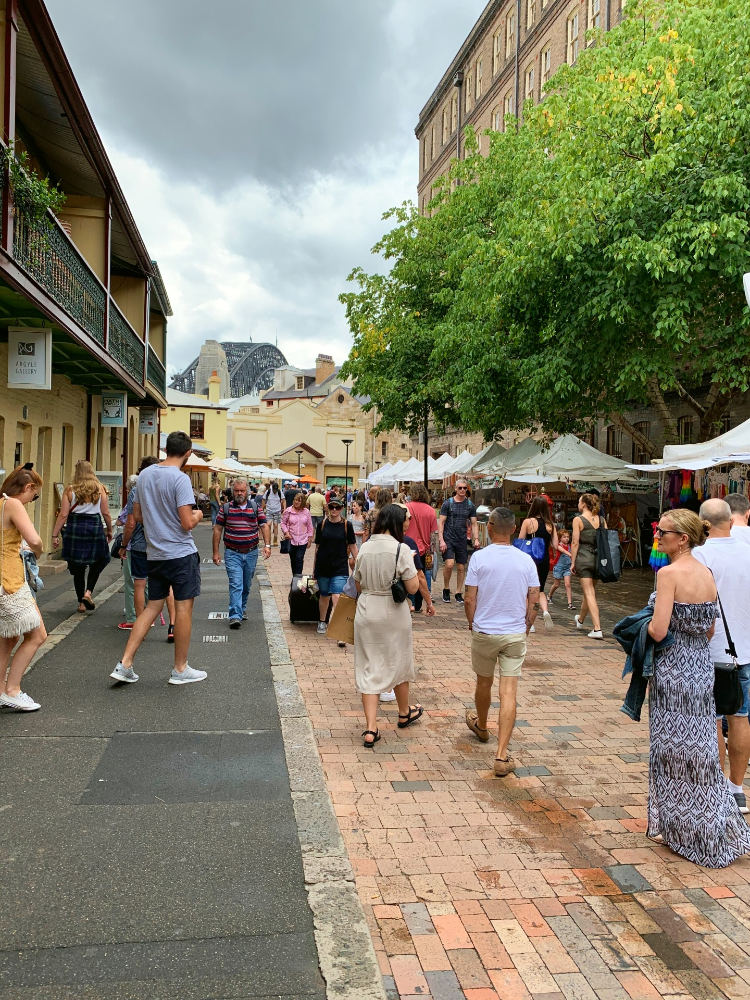
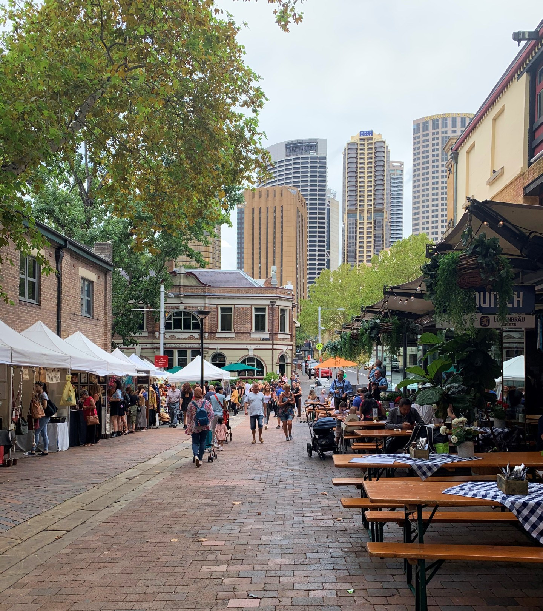

My second hometown
Sydney Australia
Attractions
Opera house / Harbour bridge

シドニーと言ったら！オペラハウスとハーバーブリッジ！
遠目から見るのと近くで見るのとではかなり印象が違うオペラハウス。
周辺には多くのバーが並んでいるので景色を見ながらおいしいご飯とお酒も楽しめます。
ハーバーブリッジは橋を歩いてみることをお勧めします。
橋の先から先まで約2kmあり片道30分ほどで歩くことがます。
橋の幅は49mあり車道が8車線、電車が2車線、そのほかに歩道、自転車道があります。
Bondi Beach
ボンダイビーチはシドニーの中でも人気の有名なビーチです。
波があるのでサーフィンをするにはうってつけ場所。
また観光地なだけあって周りにはフィッシュ&チップスのお店や、
有名なアイスクリームショップ、おしゃれなパブなど多くのお店が軒を連ねています。
ほっと一息つきたいときにもおすすめ。
本を読んでいる人、ダンスをしている人、物思いにふけっている人...
それぞれの時間を楽しむことができる場所です。
Darling Harbour
こちらは夜景スポットとして人気です。ダーリングハーバー沿いにある建物の光が水に反射してとても美しく、ロマンチックな雰囲気。
座ってゆっくり眺めるのもよし、ぐるっと一周お散歩するのもよし。
そして毎週土曜日は20時頃から花火が上がります！ダーリングハーバーの両サイドには飲食店が並び、食事をしながら夜景を楽しむこともできますし、運が良ければ花火も見ることができます。
The Rocks Market
ロックスマーケットは毎週金曜日から日曜日に開かれるマーケットです。ハーバーブリッジの手前に広がるエリアをロックスと言うのですが、1788年に英国船が上陸し、オーストラリアで最初の開拓地となった場所です。石畳の路地があり、レトロな雰囲気が味わえるスポットです。 
Copyright© 2020 @iToyo All Rights Reserved.